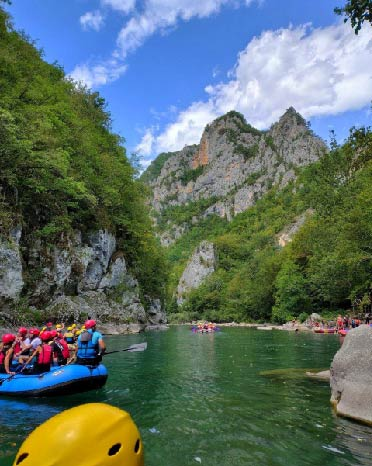
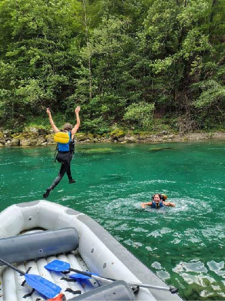

Черногория - это край скал, сосновых лесов и рек. Один из самых захватывающих способов ощутить ее дух - сплавиться по бурной реке Тара, протекающей по самому глубокому каньону Европы.
Рафтинг здесь - это не просто спорт, это настоящее приключение, которое оставляет неизгладимое впечатление даже у самых бывалых путешественников.

Путешествие длится 3 часа, за это время вы проплываете 15 км вниз по реке

Остановки, во время которых можно поплавать или прогуляться к водопаду